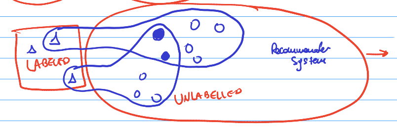
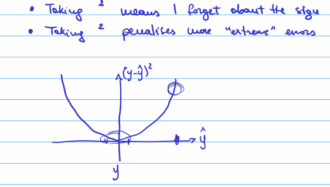
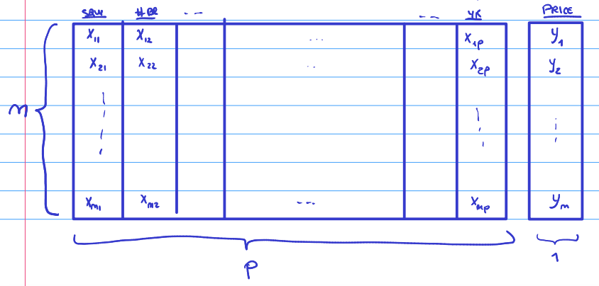
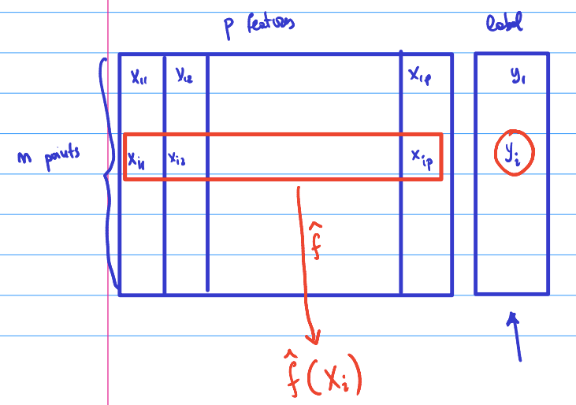
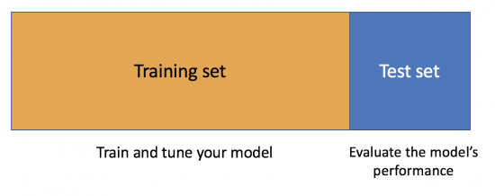

Chapter - 7 Practical data science
7.1 Machine Learning
There are multiple types of machine learning:
Supervised
Unsupervised
Reinforcement learning
7.1.0.1 Reinforcement learning:
Alpha go. ML for chess. Trained by trial and error. First they are taught the simple rules and then asked to train by themselves and learn from their mistakes. The algorithms are asked to do something and either
Get a rewards or
A penalty
As a result, they learn which moves are good and continue to try something else. Machine learning still does not understand casual relationships.
7.1.0.2 Unsupervised learning:
We do not have labels on the data. Can still observe patterns, it understands there are commonalities but not with a reason.
You can combine labeled data, for example from the passed and look for patterns with the unlabeled data.

7.1.0.3 Supervised learning
Supervised learning: Extracting patterns from data and making predictions based on passed behavior.
An example is a picture of an animal and the algorithms predicts which animal it is.
Hereby we use training data to train the algorithm. However, the data must be labeled: we already know the correct answer. This method does not include trial or error.
For example, first showing examples of cats and then it can make predictions. Meaning, we show a new picture and it can predict whether it is a cat or not a cat.
Regression tasks: label is a continuous number. Hereby what we want to predict is continuous, not necessarily the data given to predict. F.E. House prices
Classification tasks: Label is one of discrete set of possible values. F.E. Is it a dog or a cat
7.1.1 Theory
Supervised learning - Regression - Classification
| Symbol | Explanation |
|---|---|
| y | Real value |
| ŷ | Prediction |
| y-ŷ | Absolute error |
| ( y-ŷ)^2 | Squared error | |
| x | Generic input / Features. The things I use to predict y. The independent variable (statistics). |
| y | Generic output. The label. (ML) The thing I want to predict. Dependent variable (statistics). |
| p | Number of features (machine learning). Number of independent variables I have (statistics). |
| n | Size of the data set |
If I know the inputs, I could try to “predict” the output. This would state that in the real world the outputs (y) are a function of the inputs (x). In mathematical terms:
\(y = f(x)\)
For example, if we know multiple features of a house, we could try to predict whether a person would like it. (based on f.e. Square meters, number of bedrooms etc.) However, realistically and economically we cannot always find all the possible features that would predict an output. It is always affected by some uncertainty. Therefore, y is a function of x but adding some noise. Which leads to:
Deterministic function: \(y = f(x) + E\)
E = (error) noise, a random variable which models some unpredictable events that happens in the real world that we do not have a corresponding input for to take into account.
We assume that E obeys at least a couple of properties:
- E is not correlated with any of the features
- Expected value of the random variable, E[E] = 0
Assumption 1 can be F.E. that someone really wants to buy a house because there is a good place to put a dog bed. This cannot be predicted based on the other inputs (features) that are in my data set. They should not be correlated.
Assumption 2 says that the \(e\) doesn’t ALWAYS cause either a increase or a decrease in the output. It has to be truly random.
The real world: \(y = f(x) + E\). We want to try to learn more about this function f.
Estimator = \(\hat f\).
If we do a good job, we are able to find a \(\hat f\) that is similar to the true value of f. If I am able to find a \(\hat f\), I can plug in the input into the estimator and make a prediction. The estimator is the thing that I want to use to approximate as best as possible the real relationship between the inputs and outputs in the real world. In mathematical terms:
\(\hat f (x) = \hat y\) = prediction
If the model is accurate the prediction is accurate =
\(\hat f\) is similar to \(f\) and therefore \(\hat y\) is similar to \(y\) and therefore We have accurate predictions.
What is key for the data scientist is: Out-Of-Sample Accuracy.
This means that your model is accurate with your sample but also with out-of-sample data.
How can I measure how accurate \(\hat y\) is compared to \(y\)? We look at the error.
Squared error: Most classical error measure = \((y-\hat y)^2\)
Multiple reasons on why squared errors are used:
- Taking square means I forget about the sign of the error (negative vs
positive)
- Taking square penalizes more ‘extreme’ errors

Alternative way of valuing the error is the absolute error: \(y-\hat y\)
7.1.1.1 Data Visualized
Typically we will call our data: x & y
One data point looks like:
\((x1, x2, …., xp, y)\)
Here X1 can be independent variable 1 for example square meters. X2 can be number of rooms and Xp the year it is build. Y is the price of the house.

7.1.2 Finding the expected value of the error
Random variable: is described informally as a variable whose values depend on outcomes of a random phenomenon.
The error is a random variable. Therefore, y is also a random variable because some of its expression is: \(f(x) + ϵ = y\).
\(Eϵ[y-\hat y]^2\) = expected value of the squared error
Because we know that the formula for y is = \(f(x) + ϵ = y\), we can re-write this expression as:
\(Eϵ[(f(x)+ ϵ-\hat y]^2\)
We continue to solve the equation. We can re-write \(\hat y\) as \(\hat f(x)\):
\(Eϵ[(f(x)+ ϵ-\hat f(x)]^2\)
We rearrange these terms:
\(Eϵ[(f(x)-\hat f(x)+ ϵ]^2\)
For ease of notation, \(f(x)-\hat f(x)\) becomes alpha
\(Eϵ[\alpha+ ϵ]^2\)
We expand:
\(Eϵ[\alpha^2 + 2\alphaϵ + ϵ^2]\)
Make use of it being linear:
\(Eϵ[\alpha^2] + 2Eϵ[\alphaϵ] + Eϵ[ϵ^2]\)
Now we can see that alpha does not have the random element ϵ making it not a random variable and is deterministic term (constant). As it is constant and without error, it is already the expected value. We re-write again:
\(\alpha^2 + 2Eϵ[\alphaϵ] + Eϵ[ϵ^2]\)
As previously explained in the theory, the expect value of the noise should be 0. This is the assumption made.
\(\alpha^2 + 0 + Eϵ[ϵ^2]\)
The variance of a random variable is, for example variable z =
\(Var[z] = E[z^2] - (E[z])^2\)
If we apply this definition to the above ϵ:
\(Var[ϵ] = E[ϵ^2] - (E[ϵ])^2\)
As we said before, the expected value of ϵ is 0 and therefore the variance is:
\(Var[ϵ] = E[ϵ^2] - 0 = E[ϵ^2]\)
To combine this with the previous equation:
\(\alpha^2 + Eϵ[ϵ^2] = [f(x) - \hat f(x)]^2 + Var[ϵ]\)
This can be separated in two parts:
| \([f(x) - \hat f(x)]^2\) | \(Var[ϵ]\) |
Reducible error: Real relation - estimator |
Irreducible error Intrinsic property of the error |
If the model is really good, the estimator is similar to the real relation and I can “reduce” the error. If the model is extremely precise, the estimator can even be exactly the real relation. It therefore depends on the accuracy of the estimator.
\(\hat f = f\)
However, even when this happens, I still cannot affect the “irreducible” error because it is noise from the real world. It is intrinsic property / characteristics of the data, not the estimator.
To conclude, we can only affect the reducible error.
Data set = \((x1, y1)….,(xn, yn)\)
Data point i = \(Xi ϵR^p\)
The estimator is a function that takes a p dimensional and produces a real values output.
\(\hat f:R^p –> R\)
\(\hat y = \hat f (x)\)= prediction or estimate
\(\hat f\) = estimator
If I have a concrete set of observations, I can estimate the expected value. For example, I can take the average height of a class to estimate the expected value of the height of the class.
Mean squared error (MSE): The empirical average of the expected value of the error term. In mathematical terms:
\(MSE(\hat f) = \frac{1}{n} \sum_{i=1}^{n}(y_i-\hat y_i)^2\)
Considering that \(\hat y_i\) is nothing else than the prediction for the i input = \(\hat y_i = \hat f(x_i)\). Therefore, we can transform again:
\(MSE(\hat f) = \frac{1}{n} \sum_{i=1}^{n}(y_i-\hat f(x_i))^2\)
I can apply \(\hat f\) to one row, calculate the p features and look at the real label, to compute the MSE.

Mean absolute error (MAE): Hereby the only difference is that it is not squared.
\(MAE(\hat f) = \frac{1}{n} \sum_{i=1}^{n}[y_i-\hat f(x_i)]\)
7.1.3 Loss function
We can use a loss function which takes as input two numbers: the real and the predicted value and gives as output another real number. This is the formula:
\(L(y, \hat y): R^2 = R\)
| Squared error | Absolute error |
|---|---|
| \(L(y, \hat y) = (y-\hat y)^2\) | \(L(y, \hat y) = (y-\hat y)\) |
I want the loss function to obey two properties:
If I make a correct prediction \((\hat y = y)\), then I have 0 loss \(L(y, \hat y) = 0\) if \((\hat y = y)\).
For most loss function, I want \(L(y, \hat y)\) to be large than the
“wronger” my prediction $$\hat y$ is. The loss function should not become smaller when the prediction becomes “wronger.” Wronger = the more different my prediction is than the true number.
Loss function should be small when my prediction is close to the true value and it should be large when it is not.
Estimating the error on existing data on which I know the label:
\(Error(\hat f) = \frac{1}{n} \sum_{i=1}^{n}L(y_i-\hat f(x_i))\)
Now I am calculating how accurate my model is based on my data set. However, we want our model to work well on new previously unseen data that is out of my data set / sample. In other words: Out of sample accuracy.
We therefore, separate our data randomly in two parts: the training set and the test set.

Training set: Data we show our model to have it learn a good estimator. \(\hat f \approx f\). The training set will be used to derive to a estimator.
Test set: Data which we hide from our model. After the model has been trained, we will simulate it to the test data to evaluate the model’s performance. The test set will be sued to estimate the error fo the \(\hat f\).
The training set is called: N = \((x_1,y_1)....,(x_n,y_n)\)
The test set is called: M = \((x_1,y_1)....,(x_m,y_m)\)
Therefore, to calculate the estimate of the error of the model:
\(Err(\hat f) = \frac{1}{n-m} \sum_{i=m+1}^{n}L(y_i-\hat f(x_i))\)
To train a model = to find good values for its parameters. First I have
to fix the shape of the model.
Linear: \(\hat f(x_1-,x_p) = \beta_0+\beta_1,.....+\beta_p X_p\)
Beta’s are the linear coefficients and the X1, Xp are the variables. The \(\beta\) ’s are parameters. I can train a model to find a good estimator by finding good parametersQuadratic: \(\hat f(x_1-,x_p) = \beta_0+\beta_1,.....+\beta_p X_p + \beta_1X_1^2+....\beta_1pX_1p + etc.\)
I do not know what model is the good model. So I train each model and then I pick the model that has the lowest error.

\(x\) = an input (p)
\(\beta\) = a vector of parameters (k)
\(\beta^*\) = optimal solution of the betas
This is a optimization problem where I try to minimize the empirical error of the model on the training set. Once we solve the following model, I find the optimal values for the \(\beta\)’s and this will find me the estimator. Once I have my estimator, I can take the test data and estimate an error for the model.
Training error =\(\frac{1}{n} \sum_{i=1}^{n}L(y_i-\hat f(\beta_ix_i))\)
Test error = \(Err(\hat f) = \frac{1}{n-m} \sum_{i=m+1}^{n}L(y_i-\hat f(\beta^*_i,x_i))\)
7.2 Bias-variance trade off
Train/test split = Random variable
Therefore, if I do this twice, I will most likely get different results. As we now have a different training set, I will find a different optimal value for \(B*\) and therefore the estimator. Subsequently, the estimate of the error will be different also.
There is a second source of randomness.
Bias-variance trade-off =
\(E_{Traintestsplit} [(y-\hat y)^2] = Var[\hat y] + (Bias[\hat y])^2 + Var [ϵ]\)